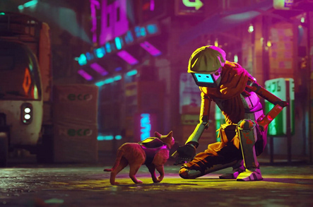
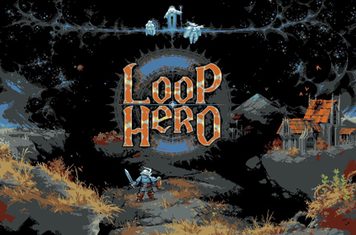
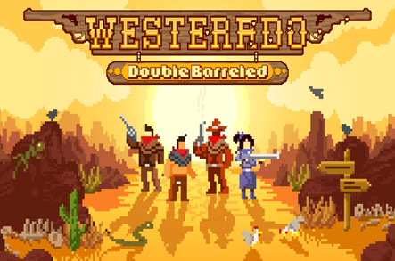
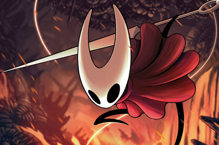
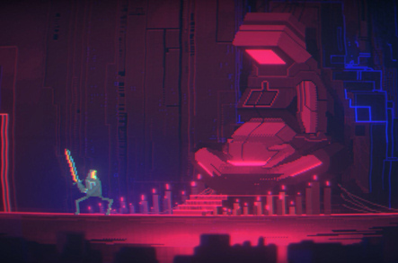
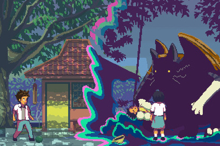
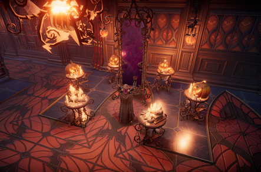
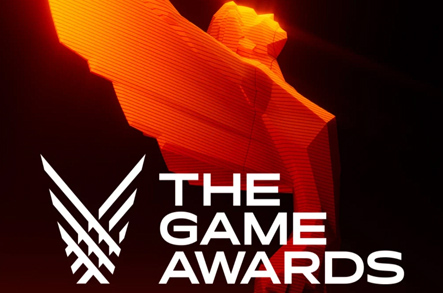
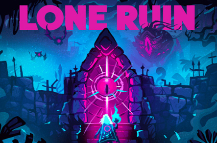
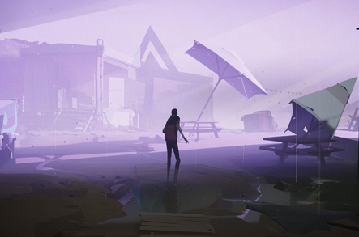

NOTICIA
Stray demuestra que gatitos más ciencia-ficción no es la combinación perfecta, pero se acerca bastante.
Oscar Isaac25 de noviembre
Me pregunto en qué medida puede resultar atractivo un juego como 'Stray' a alguien que no le interesen los gatos, pero en cualquier caso, tendréis que buscar a esa persona y preguntarle, porque (a modo de disclaimer) me confieso devoto de los felinos...
Leer Más

NOTICIA
PIXEL ART
El juego indie 'Loop Hero' se ha convertido en uno de los mayores éxitos inesperados de 2022.
Hugo Torres23 de noviembre
Estamos viviendo un boom de juegos independientes en lo que llevamos de 2022 como pocas veces antes habíamos experimentado. Y lo más importante: le están quitando espacio a los AAA, aprovechando que estos están en un momento de impasse y aún no han empezado a llegar grandes títulos de las nuevas consolas.
Leer Más

NOTICIA
PIXEL ART
Mi juego favorito de Game Pass en Xbox es Westerado: un indie con pixelazos y excelente ambientación.
Thiago Muñoz20 de noviembre
Me he pasado las tres o cuatro tardes que he tardado en completar 'Westerado' (dura unas dos horas y media o tres relajadas, aunque si jugueteas con los extras, la cosa se te puede ir a más de diez) hipnotizado por su estilo gráfico. Su delicioso pixel-art me ha tenido absolutamente...
Leer Más

NOTICIA
AVENTURA
INDUSTRIA
LANZAMIENTO
Hollow Knight: Silksong confirma su lanzamiento en PS5 y PS4
Oscar Isaac18 de noviembre
Hollow Knight: Silksong es uno de los juegos más esperados año tras año, sin embargo sus responsables, el estudio independiente Team Cherry, todavía no ha desvelado su fecha de lanzamiento. Eso no quita que de vez en cuando vayamos conociendo nueva información del proyecto: ahora se ha confirmado oficialmente que llegará a consolas PlayStation, lo que significa que podremos jugarlo tanto en PS5 como en PS4.
Leer Más

OFERTA
Una joya indie desarrollada en España que puedes conseguir 100% gratis para tu PC... solo hasta el 25 de noviembre
Marcos Cortez12 de noviembre
Siempre es un placer conseguir juegos 100% gratis. Es algo a lo que estamos acostumbrados gracias a Epic Games Store, Steam, servicios de suscripción o incluso GOG. La plataforma de juegos de CD Projekt para PC tiene otra gran sorpresa reservada para ti. Con motivo del Black Friday 2022...
Leer Más

NOTICIA
INDUSTRIA
Top 10 nuevos juegos indie para PC y Nintendo Switch (Indie World Noviembre 2022).
Oscar Isaac10 de noviembre
Ayer 9 de noviembre de 2022 se emitió un Indie World con nuevos juegos indie que llegarán a Nintendo Switch a lo largo de lo que queda de año y principios de 2023. He recopilado 10 de estos juegos mostrados que tienen una temática más »cozy gaming» para mostraros juegos relajantes o bonitos que podremos jugar estos meses. Espero que os gusten mucho.
Leer Más

NOTICIA
ACTUALIZACIÓN
NUEVO CONTENIDO GRATUITO para V Rising. Nuevas decoraciones para este mes de Halloween.
Nakamura Iyasaki20 de octubre
¡No solo eso, sino que todos los jugadores de V Rising podrán reclamar el paqueteDLC gratuitoHaunted Nights Castle con temática de Halloween hasta el 7 de noviembre! Encontrarás todo tipo de decoraciones espeluznantes del castillo para guardar para siempre. Cubre tus castillos con membranas e ilumina tus pasillos oscuros con velas de calavera ahora y durante todo el año...
Leer Más

NOTICIA
INDUSTRIA
PREMIOS
Estos son los juegos nominados a Mejor Indie y Mejor Narrativa en los The Game Awards.
Hugo Torres17 de octubre
Ahora conocemos los nominados a Mejor Indie y a Mejor Narrativa. Estamos en esa época del año en el que toca hacer balance de lo que ha ido saliendo a lo largo del mismo. Y es que 12 meses dan para mucho en el mundo de los videojuegos. Desde hace ya muchos años, distintos medios dan premios por...
Leer Más

NOTICIA
LANZAMIENTO
Lone Ruin es el proximo Super Rare Originals, que llegara tras los reyes.
Peter Parker16 de octubre
Ya os hemos hablado de Super Rare Games en más de una ocasión, especialmente por sus lanzamientos físicos e varios títulos indie como Sally Face, FAST rmx o SteamWorld Quest, pero también por su línea Originals, juegos que ellos publican directamente en formato digital. Este movimiento comenzó con el más que notable Grapple Dog, que también recibió una versión física hace poco, y continúa ahora con LONE RUIN.
Leer Más

NOTICIA
AVENTURA
Somerville, la guerra de los mundos en silencio.
Peter Parker12 de octubre
Con el éxito de Inside (2016), una distopía sobre el control de pensamiento mucho más ambiciosa, el estudio danés Playdead se aseguró que lo suyo no había sido un encuentro fortuito con la genialidad, sino que tenía los mimbres para erigirse en un sello reconocido a nivel mundial.
Leer Más